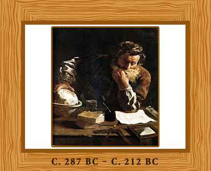

Opportunity came when he got the chance to continue his studies in a famous school of mathematics founded by Euclid. Here he got the pleasure to study astronomy, physics and mathematics with other geniuses and big minds of that era. Under the guidance of two great mathematicians and scholars: Conon of Samos, and Eratosthenes of Cyrene, Archimedes grew up to be a great scientist.
The Story of the Golden Crown
Archimedes was given the task to determine the purity of the gold crown made for King Hiero II. In the process he discovered the way to find out the density of gold and successfully proved that silver was mixed with the gold crown. This is how he devised a method for determining the volume of an object with an irregular shape.
The Archimedes Screw
Another great discovery by Archimedes is his famous ‘Archimedes Screw’. This is still a famous tool in Egypt used for irrigation. This screw was mainly invented to remove water from the hold of large ship; however it is also helpful for handling light, loose materials such as ash, grain, sand etc.
The Claw of Archimedes
Also known as ‘the ship shaker’, The Claw of Archimedes is a great weapon designed by Archimedes for the purpose of defending his home city Syracuse.
Archimedes is also famous for his contributions to the filed of mathematics. These include: the use infinitesimals in a way that is similar to modern integral calculus, the mathematical prove of the formula for area of a circle, the solution to the problem as an infinite geometric series etc.
Archimedes died during the Siege of Syracuse in 212 BC when he was killed by a Roman soldier. The Roman soldier killed him while he busy working and experimenting on his ideas.
This great scientist and mathematician passed away but his contributions led the world towards scientific development and betterment of the human race.
Go to top